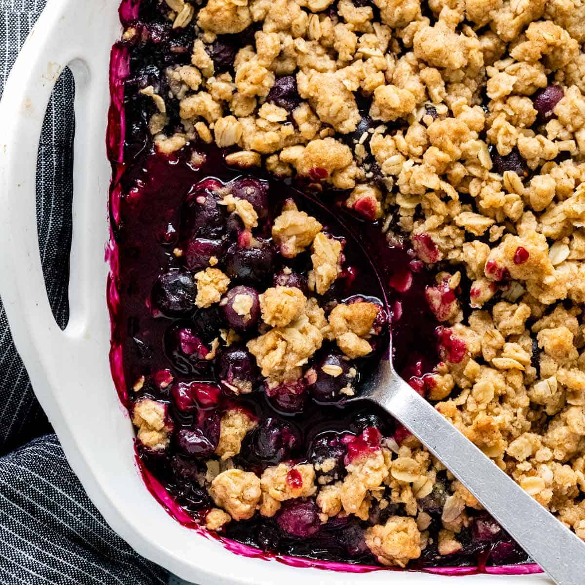

Berry Crisp

Berry Crisp-The Song of The Berry Dessert
The berry crisp and for that matter, crisps in general are a divine snack.
normally made with blueberries and/or rasberries.
The beauty lies in that one need not stick to only these options.
More on that later.
Ingredients
- 1 cup Oats
- 1 cup berries
- 1 tbl spn sugar
- 1 pie crust
Steps
- make oats
- cook down sugar
- place pie crust in pan
- load all ingredients into pan
- bake until crispy